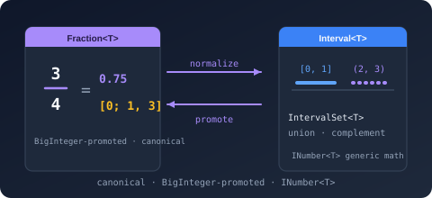

Bodu.Numerics Namespace
- Package
-
Bodu.Numerics 1.0.0

Purpose
Bodu.Numerics provides exact rational arithmetic (Fraction<T>), arbitrary-precision decimals (BigDecimal), generic complex numbers (Complex<T>), and bounded numeric intervals (Interval<T> with its discrete, pair, and set companions) on top of the .NET generic-math interfaces, plus a small family of single-pass statistics aggregates. Every value type is immutable, value-equatable, and composable with any algorithm written against INumberBase<T> / INumber<T> / ISignedNumber<T>.
Reach for this library when you need rational or decimal arithmetic that does not lose precision to floating-point drift, complex arithmetic over float / double / Half, a single representation for closed / open / half-open intervals (and unions of them), a precision escape hatch for chained calculations that would otherwise accumulate rounding error, or constant-space summaries of a stream of samples.
Static documentation
- Bodu.Numerics introduction - namespaces, headline types, scenarios.
- Bodu.Numerics getting started - install and minimal samples for
Fraction<T>andInterval<T>. - Bodu.Numerics guides - recipe-style walk-throughs:
Fraction<T>,BigDecimal,Interval<T>, interval algebra, discrete intervals, running statistics, generic-math constraints, JSON serialization.
Key types
Rational arithmetic
- Fraction<T> - immutable rational with auto-reduction to canonical form,
BigInteger-promoted intermediates for safe arithmetic, and the fullINumber<T>/ISignedNumber<T>surface. Backed by anyIBinaryInteger<T>-int,long,BigInteger, or a custom type.
Arbitrary-precision decimals
- BigDecimal - immutable
BigIntegerunscaled value paired with anintscale. Unbounded (no overflow), exact add / subtract / multiply, precision-controlled division, value-based equality across scales, and the fullINumber<BigDecimal>/ISignedNumber<BigDecimal>surface.
Complex numbers
- Complex<T> - immutable complex number over any
IFloatingPointIeee754<T>component type; the generic counterpart of thedouble-onlySystem.Numerics.Complex, with arithmetic,Conjugate/Reciprocal, the elementary functions (Sqrt,Exp,Log,Pow, trigonometric and hyperbolic), parsing / formatting, and theINumberBase<T>/ISignedNumber<T>surface (complex numbers do not order, so notINumber<T>). Guide: Working withComplex<T>.
JSON support is serialization-agnostic in this package; the converters ship in the companion Bodu.Numerics.Serialization.Json package.
Bounded intervals
- Interval<T> - immutable interval over any
INumber<T>endpoint type. Independent endpoint inclusivity on each side expresses all four conventional shapes; one canonicalEmptyinstance covers every degenerate / inverted-bound case. - Interval - non-generic helper class with factory methods that infer the endpoint type from arguments (
Interval.Closed(1.5, 2.5)→Interval<double>). - DiscreteInterval<T>, DiscreteInterval - the integer-domain counterpart over any
IBinaryInteger<T>: every shape canonicalizes to closed integer bounds, so successor-adjacent runs merge and an open interval over consecutive integers is empty. See the discrete intervals guide. - IntervalPair<T>, DiscreteIntervalPair<T> - allocation-free results of a binary
Difference/SymmetricDifference: zero, one, or two disjoint pieces, each with aToIntervalSet()bridge. - IntervalSet<T> - immutable normalized union of disjoint, non-adjacent intervals; the N-ary home for
Union/Intersect/Except/Complement. See the interval algebra guide.
Statistics aggregates
- RunningStatistics<T>, RunningQuantile<T> - single-pass, constant-space stream accumulators (Welford count / min / max / mean / variance with a parallel
Combinemerge; a P² streaming quantile estimator). - MovingSum<T>, MovingMinMax<T> - rolling-window sum / mean and min / max of the most recent N samples in amortized O(1). See the running statistics guide.
Example
using System.Numerics;
using Bodu.Numerics;
// Exact rational arithmetic - no floating-point drift.
Fraction<int> sum = Fraction<int>.Create(1, 3) + Fraction<int>.Create(1, 5);
Console.WriteLine(sum); // "8/15"
// Best rational approximation to a real number.
Fraction<int> piApprox = Fraction<int>.Approximate(Math.PI, maxDenominator: 1000);
Console.WriteLine(piApprox); // "355/113"
// Bounded intervals with independent endpoint inclusivity.
var window = Interval<int>.ClosedOpen(0, 100);
Console.WriteLine(window.Contains(99)); // True
Console.WriteLine(window.Contains(100)); // False - upper exclusive
Notes
- Canonical form. Every
Fraction<T>is GCD-reduced on construction, with the sign on the numerator and the denominator strictly positive.Fraction<int>.Create(2, 4)andFraction<int>.Create(1, 2)are indistinguishable; there is no unreduced form. - Overflow handling. Arithmetic operations promote operands to
BigInteger, evaluate exactly, then narrow back toT. Overflow on narrowing raisesOverflowException. UseFraction<BigInteger>to eliminate the narrowing step entirely. - The empty interval is unique. Any
Interval<T>constructed with inverted bounds, or with equal bounds and at least one open endpoint, compares equal toInterval<T>.Emptyand shares its hash code. - Generic-math first. The value types implement the relevant
INumber-style interfaces - includingIParsable<T>,ISpanParsable<T>,ISpanFormattable, andIUtf8SpanFormattable- so they slot into algorithms written against the generic-math abstractions without bespoke wrappers. - Cross-package.
Bodu.Financial.Money<TCurrency>round-trips throughFraction<BigInteger>viaToFraction()/FromFraction()/MultiplyExact()for sub-minor-unit-precise monetary chains; see the Bodu.Financial overview. - See also: the
Fraction<T>guide, theBigDecimalguide, theInterval<T>guide, the interval algebra and discrete intervals guides, and the running statistics guide.
Namespaces
Classes
- DiscreteInterval
Provides type-inferring factory methods for DiscreteInterval<T>, mirroring the static factories on the type but inferring the endpoint type from the arguments.
- Interval
Provides type-inferring factory methods for Interval<T>.
- MovingMinMax<T>
Maintains the minimum and maximum of the most recent N samples of a stream, updating in amortized O(1) as each new sample displaces the oldest.
- MovingSum<T>
Maintains the sum and mean of the most recent N samples of a stream, updating in amortized O(1) as each new sample displaces the oldest.
Structs
- BigDecimal
Represents an immutable, arbitrary-precision decimal number - a BigInteger unscaled value together with a base-ten scale.
- Complex<T>
Represents an immutable complex number - a value with a real and an imaginary component - backed by an arbitrary IFloatingPointIeee754<TSelf> component type.
- DiscreteIntervalPair<T>
Represents the result of a binary DiscreteInterval<T> set operation as zero, one, or two disjoint, non-adjacent intervals in ascending order - the discrete counterpart to IntervalPair<T>.
- DiscreteIntervalPair<T>.Enumerator
Enumerates the non-empty pieces of a DiscreteIntervalPair<T> without allocating.
- DiscreteInterval<T>
Represents an immutable interval over a discrete integer domain - a set of consecutive integers of type
T- with successor/predecessor-aware emptiness and adjacency.
- Fraction<T>
Represents an immutable exact rational number - a ratio of two integers - backed by an arbitrary IBinaryInteger<TSelf> component type.
- IntervalPair<T>
Represents the result of a binary interval set operation as zero, one, or two disjoint intervals in ascending order - the maximum number of pieces that subtracting or symmetric-differencing two intervals can produce.
- IntervalPair<T>.Enumerator
Enumerates the non-empty pieces of an IntervalPair<T> without allocating.
- IntervalSet<T>
Represents an immutable set of values as a normalized collection of disjoint, non-adjacent Interval<T> pieces in ascending order - the general result of interval algebra that can produce a disconnected range.
- IntervalSet<T>.Enumerator
Enumerates the pieces of an IntervalSet<T> without allocating.
- Interval<T>
Represents an immutable, bounded interval over any INumber<TSelf> type, with independent open or closed endpoints on each side.
- RunningQuantile<T>
Estimates a single quantile of a sample stream in one forward pass and constant space, using the P² algorithm of Jain and Chlamtac (1985).
- RunningStatistics<T>
Accumulates the count, minimum, maximum, mean, and variance of a sample stream in a single forward pass, using Welford's numerically stable online algorithm.